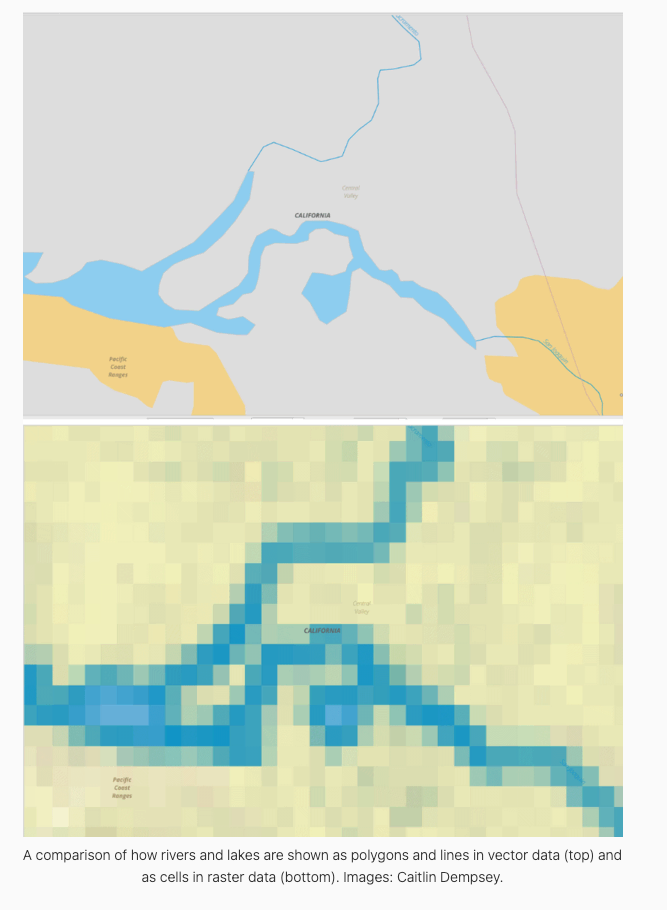

Basics of Geospatial Data
In this short introduction, we offer some motivations and cover basic geospatial analysis in R. To showcase the power of geospatial analysis for applied researchers, we rely on an application of exploring poverty and education in New York. By the end of this chapter, you should be comfortable finding, cleaning, and visualizing the spatial data that you are interested in. Only when you have mastered these concepts, can you confidently begin to model spatial relationships.
Motivation
Geospatial data is ubiquitous in the social sciences and tools to systematically analyze spatial variables and spatial relationships should be a part of every data scientist and social scientist’s toolkit. From visualizing election returns in American politics to depicting different countries’ gross domestic products (GDP), the ability to make a map is immensely useful. Every article concerning state and local politics in political science will usually showcase a map of states or counties at some point in order to effectively illustrate the distributions of the variables important to the analysis. Macroeconomists and comparative political scientists conducting cross-national studies similarly use maps to illustrate the spatial distribution of their key variables. Even when researchers are studying relationships that are not inherently spatial, including a map is a powerful visualization technique.
If the unit of analysis is a spatial unit - such as country-level, state-level, county-level or topographical - maps are perhaps the best way to visualize the distribution of your variables of interest across space. Further, sociologists, economists, and epidemiologists who are interested in examining crime and health data will find particular advantages in being able to map crime rates, the prevalence of a disease, or the health outcomes in different areas of a town or city. Public administration and policy researchers who want to make recommendations to decision-makers about where to build police stations, hospitals, fire departments, parks, or concentrate funding to targeted areas can utilize a well-made map and spatial regression techniques to draw robust conclusions. Perhaps most importantly, researchers who want their work to be public-facing and read by people without technical expertise could find more success by displaying their results and analysis through maps than through tables or even other, non-map, data visualizations.
Geospatial data is also extremely common and readily available, with easy access to US Census data through library(tidycensus). Shapefiles and spatial data are also available through many cities, states, and government agencies’ data repositories. The use of application programming interfaces (APIs) has made accessing the wealth of spatial data collected by the world’s governments and businesses extremely easy. library(sf) also works well with library(dplyr) and library(ggplot2) to make creating attractive maps just as easy as accessing spatial data, overcoming the inherent challenges with spatial data being multidimensional.
As a data scientist or social scientist thinking through their research design, if the variables or relationship that is being modeled is spatial, then making a basic map and thinking through the spatial distribution of important variables should be the researchers first step. Where do researchers go after the creation of their map, though? The goal of this treatment on spatial regression is to equip applied researchers with the tools and theoretical background needed to go a step beyond mere visualization and discussion of geospatial data to estimating geospatial regression models. Further, readers will learn when spatial autocorrelation could render standard errors from OLS models incorrect and how to detect spatial autocorrelation in spatial data. Essentially, whenever a researcher is modeling a relationship that has spatial autocorrelation, they should use one of the techniques described in this work to purge autocorrelation from the error term of their models. After reading this guide, researchers will know when to use spatial regression methods and how to visualize the results of spatial regression models.
Two Types of Spatial Data
Spatial Data provides information on ‘something’ with respect to its location. This information is called attribute. In itself, attribute is not spatial data. In combination with information about it’s position it becomes spatial data.
Temperature at a point when combined with latitude or longitude, height of a person in a room with respect to distance from two walls, etc., are all examples of attributes with information of location becoming spatial data.
Purely spatial information of entities are represented by data models. Basic types of data models that we come across in geospatial analysis are the following:
1. Point - A single point.
2. Line - A stream of ordered points connected by straight line segments.
3. Polygon - A set of lines forming a closed loop enclosing an area.
4. Grid - A collection of points or rectangular cells, organised in regular lattice.
The first three are known as Vector Data, and represent entities as exactly as possible while the the last one is Raster Data. Raster data is used to represent continuous values by breaking them into finer tessellations (Bivand et al. 2008).
Same data can be expressed as both raster and vector data types. When in raster form, data are stored as values of pixels in a matrix of cells. When in vector form, data are stored as value attributes in association with a set of coordinates.
Shapefiles are an example of vector data and and satellite images are raster data.
Photo by: GISlounge
Mapping inR
Now that we have covered some basic motivations and presented the two types of spatial data, it should be pretty clear that spatial analysis skills are essential for data scientists and social scientists. To further illustrate the benefits of knowing how to analyze geospatial data, we will discuss an applied example that introduces the analysis presented in the fourth chapter.
As mentioned above, the first step in any geospatial analysis is creating a map of the variables of interest. In order to start a spatial analysis, we will first need to collect spatial data that can be used to answer our research question. Our broad research question for our guide is: does a college education reduce poverty? Once a researcher has their research question, finding data can be done with the get_acs() function from library(tidycensus) or by accessing spatial data in a data repository. The goal is to acquire measures of the variables that we are interested in and the geometry data needed to map and analyze spatial units. Shapefiles contain this information. You can find this geometry information, in the form of shapefiles, from many governmental and private businesses’ data portals. Using library(sf) makes creating maps easy. This guide focuses mainly on spatial regression, so its use of library(sf) is limited. More help with using library(sf) can be found here and here.
We start our analysis by reading our data into R with st_read(). The example code below utilizes data from the American Community Survey’s 2008-2012 results. This data can be found here and our analysis is adapted from DGES (2022). We use st_set_crs() to set the CRS ID to 4326. The CRS, or coordinate reference system, ID tells R where the points and lines that make up our data’s spatial geometry are located in geographic space. The CRS ID also tells R what method should be used to flatten or project spatial units into geographic space. Below we use library(sf) and library(dplyr) together to read in the data and set the CRS ID to 4326. The clean_names() function from library(janitor) makes all of the variable names lowercase and replaces spaces with underscores.
## Packages Needed
library(tidyverse)
library(sf)
## Reading in shapefile
ny_shape <-
st_read("data/nyctract_acs/NYC_Tract_ACS2008_12.shp") %>%
st_set_crs(value = 4326) %>%
janitor::clean_names()Reading layer `NYC_Tract_ACS2008_12' from data source
`C:\Users\17176\Documents\Data Science\ppol670-final-book\data\nyctract_acs\NYC_Tract_ACS2008_12.shp'
using driver `ESRI Shapefile'
Simple feature collection with 2166 features and 113 fields
Geometry type: MULTIPOLYGON
Dimension: XY
Bounding box: xmin: -74.25559 ymin: 40.49612 xmax: -73.70001 ymax: 40.91553
CRS: NAWe now have our dataset read into R. We can use dim() or look in the top right pane to see that our dataset has 2166 observations of 114 variables covering demographic and economic information at the census tract level for all of New York’s five boroughs. This is obviously quite a lot of variables and numerous questions of interest for social scientists and policy researchers can be answered with this dataset. For tractability, we will limit our analysis to a couple of variables in only one of New York’s boroughs; we will visualize poverty in Brooklyn, New York City’s most populous borough.
Before starting any analysis, researchers will probably need to go through the sometimes lengthy and difficult process of data cleaning and wrangling. During the data cleaning and wrangling stage, researchers can remove NA values they do not want; create new variables that better capture your intended research design; and format your data in the most convenient manner for your analysis. For this example, much of the cleaning of the raw ACS data has been done by the Department of Geography and Environmental Science at Hunter College in New York, New York. They have also included the weighted variables which account for the survey’s complex sampling procedure. The only wrangling necessary is to turn the poverty variable, currently measured as the total number of people living below the poverty line in a census tract, into a poverty rate variable that captures the proportion of a census tract’s residents living below the poverty line. The code below creates this variable and uses geom_sf() to create a map of poverty rates by the census tract in Brooklyn. We also filter to exclude relatively underpopulated census tracts. Since we plan to utilize the proportion of a census tract’s residents with a bachelor degree to predict the census tract’s poverty rate, we also create a proportion of residents with a bachelor’s degree variable.
## Poverty Map
brook_shape <- ny_shape %>%
filter(boroname == "Brooklyn", poptot>200) %>%
mutate(poverty_rate=(poor/poptot),
bach_rate = (onlybachel/poptot))
m1 <- brook_shape %>%
ggplot(aes(fill=poverty_rate)) +
geom_sf(color="white", lwd=.1) +
scale_fill_gradient(guide="colorbar", na.value="white") +
theme_void() +
scale_fill_gradient2(midpoint = mean(brook_shape$poverty_rate)) +
labs(title="Poverty Rate in Brooklyn",
fill=NULL, caption = "Data Source: 2012 ACS")
m1
We can see from the map above that the poverty rate is relatively low across much of Brooklyn, but there are several pockets throughout the borough that exhibit high levels of poverty. These clusters are indicated by the darker purple tracts. The darker the purple, the higher the poverty rate, and the darker the red, the lower the poverty rate. High and low values are determined as a comparison to the mean level of poverty in Brooklyn. Utilizing the scale_fill_gradient2() function with the midpoint argument, we can see that the white tracts represent the average level of poverty throughout Brooklyn.
The map shows that the southern tip and the northeast section of Brooklyn have the highest rates of poverty in the borough. Much of the southeastern and the northwestern census tracts seem to have the lowest levels of poverty. These observations are a good first start in analyzing the distribution of poverty across Brooklyn, and, if we only wanted to conduct a descriptive study, we could perhaps end here. Our goal, however, is to explore the relationship between college education and poverty rates. To do this, we need to connect a census tract’s rate of poverty with its rate of college education. A logical next step is to map the proportion of a census tract’s residents that graduated college. The map, and the code to produce the map, is below:
## Bachelor's Degree Map
m2 <- brook_shape %>%
ggplot(aes(fill=bach_rate)) +
geom_sf(color="white", lwd=.1) +
scale_fill_gradient(guide="colorbar", na.value="white") +
theme_void() +
scale_fill_gradient2(midpoint = mean(brook_shape$bach_rate)) +
labs(title="Percent Bachelor's Degree in Brooklyn",
fill=NULL, caption = "Data Source: 2012 ACS")
m2
Mapping the proportion of Brooklyn residents with a bachelor’s degree in each census tract shows that the northwest part of Brooklyn is highly educated, and there are some clustered census tracts of high bachelor’s degree attainment throughout the city. The majority of the census tracts in Brooklyn, however, have below the average rate of college educated residents.
Now that we have our maps, we can display them side-by-side using library(patchwork) to try and draw informal inferences from the distributions of poverty rates and bachelor’s degree holders.
## Presenting Maps side-by-side
library(patchwork)
m1 + m2
We can see that the areas with high levels of poverty appear to have lower rates of residents holding bachelor’s degrees. For example, the northwest cluster of high college education rate census tracts is also a cluster of low poverty rate census tracts. The eastern cluster of low, the lowest consistent cluster in the borough, college degree attainment census tracts is also a cluster of high poverty census tracts. Looking at these maps, there does seem to be a pattern between low education and high poverty areas. This is generally supportive of the notion that higher levels of education lead to poverty reduction, but we would want a more formal hypothesis test before drawing any firm conclusions. This visual analysis would also only be able to identity a correlation, at best, without employing the more rigorous techniques of causal inference. There further appears to be clusters of poverty and clusters of higher educated census tracts evident in the maps which indicate some degree of spatial autocorrelation, but we cannot be sure without a formal test.
From these maps, we cannot infer a causal effect, prediction, or any rigorous parameter estimate. Any observation based conclusion will be purely conjecture. While this visualization may be important for presenting results in the our final report or helping to understand how variables are distributed across space, our treatment on spatial regression will provide researchers with the necessary tools to take geospatial analysis one step further and estimate causal effects and predictions based on spatial relationships. While visualizing spatial data in the form of maps is one of the benefits of working with geospatial data, the richness of the data can be further utilized in more advanced statistical techniques.
In sum, there are two main reasons to learn spatial regression tools: (1) to be able to move beyond mapping variables to estimating complex spatial relationships and (2) to know how to create spatial models that purge spatial autocorrelation from the error term.